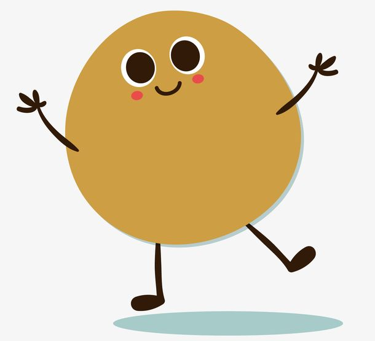

#我愚蠢的理想主义
“你太急切的想要一个答案了。想要风光的学位，瞬间的博学，想要意气风发，想要闪着金光
走向喜欢的人。但现实告诉我，操之过急会败北，它要我等，要我耐得住不断延长的时间线，要我付出足够
的努力堆砌在沉闷里，晦涩的时光里，才肯将‘我想要’一点点递迭送至我手里。”
————《小姜的心情日记》

#我希望的一直是开怀大笑的你
我希望你能在最好的年纪做最好的自己，永远都能开心，谈恋爱开心，单身也开心，不要委屈自己。
如果以后的日子里见不到，我就记好那些有趣的事，见面时互相倾诉，互相温暖，但愿我们忙碌的时候，都能快乐充实自己
岁岁年年很了不起了，能互相陪伴就已经很幸运了。我会在生活费下来的时候给你点一杯奶茶，你也会在看到是闺蜜一起用的东西，
买来寄给我。还有很多的让人想起会有些哽咽的瞬间，都是我们一起经历过的。我们无法相见，但我们却互相惦记。
————《小姜的大学日记》
#总要明白的我们才是自己的星星
这个世界上有很多糟糕的话，当它们投射向你的时候，不要害怕，它们只想把你打造成一个糟糕的人，但你本身不是。
我们难得来人间走一趟，因此我们要多去看一些美好的事物，例如那万里的清空，灿烂的星河，皎洁的月，还有镜中温柔的自己！
————《光和希望》